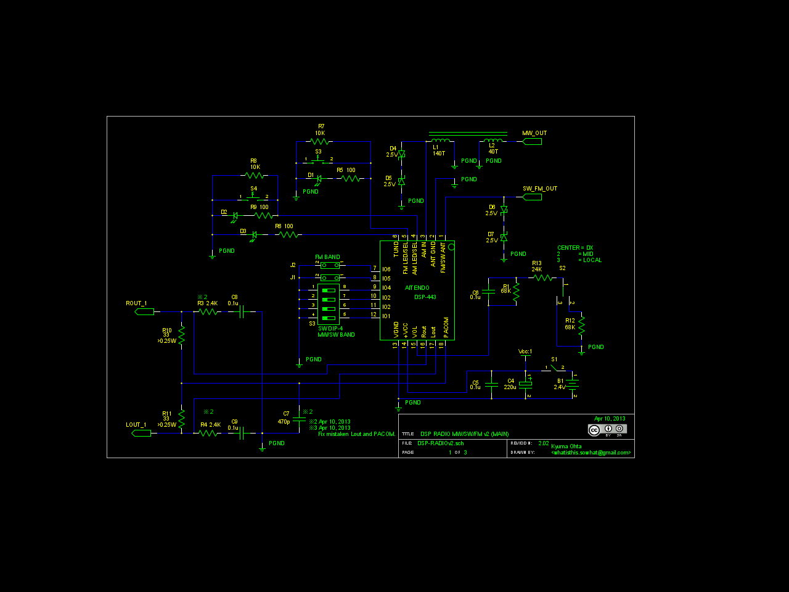
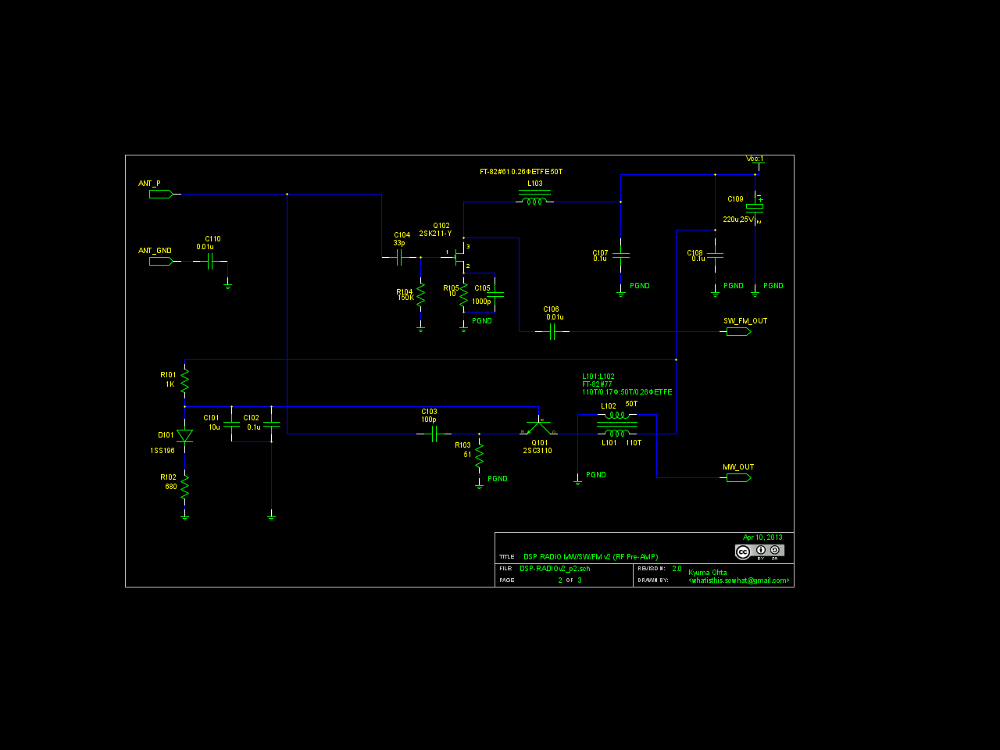
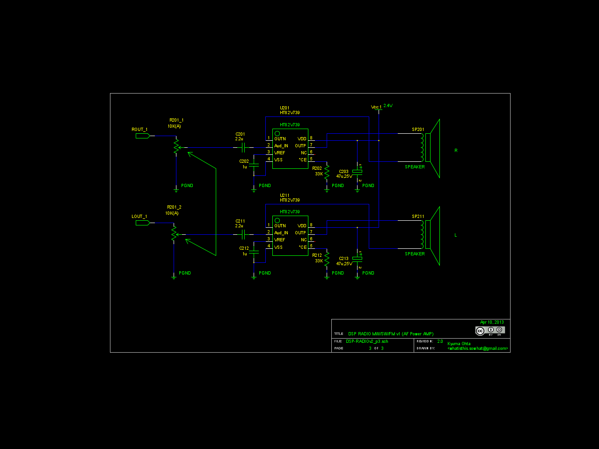

Sorry, under construction and Japanese only,Yet...
DSPラジオ 続き(2013-04-10)
もくじ
これは何か
どのようなものか
電子工作系もくじへ
全体目次へ
これは何か
前回の成果を踏まえて、DSP6919を使ったラジオを作って来ましたが、その中でプリアンプの改良に手を出して…その内にモジュールの入力周りが壊れたりもしました。どうも、このICやモジュールは入力周りが過電圧やESDに弱いようです。
そうこうしてる内に色々と色気も出てきて、コイルを巻いたり外したりの繰り返しに陥りましたが、まぁそこそこDX（遠距離受信）も狙えて実用的？なものになりました。
多分（未だ面倒なので測ってないけど）消費電流は上がってますが…結局、モジュールの入れ替えを兼ねて新しい基板で作ることに。
どのようなものか
今回使ったのは、前回と同じくDSP-443です。
入力周りの保護のために、二つのアンテナ入力の両方に2.5Vのツェナーダイオードを対向で入れています(D4〜D7)。
中波に関しては、入力感度と選択度をを上げるために、プリアンプ→コイル→コイル→コイルと言うイレギュラーな構成になっています。
短波・FMについては、その構成だとコア損が目立つので、コイル負荷・コンデンサカップリングにしました。
そして、音声周りですが前回はかなり無理をさせていたのと音の歪が気になったので、思いきって低電圧オーディオアンプであるHOLTEK社のHT82V739を使いました。
モジュールのヘッドフォン(スピーカー)出力を33Ωのダミー抵抗で受けて、その電圧を増幅させています。
で、実際に夜動かしてみると秋田放送とか山形放送が聴けない＠神奈川県相模原市。と言う事がわかり、あーDSPが音量で「足切り」してるんだろうな。と云うこともわかり、我が儘な願望から、感度設定のためにS2周りのようにして元々の音量を調整できるようにしました。DXやMIDにすると、相当音が歪みます（が、感度は良くなる）



回路図とgSCH用のDSP443のシンボルセット
(以下、続く(；´Д｀))
本ドキュメント・及びノウハウは CC BY SA v3.0で公開します。
CC BY SA v3.0で公開します。
実装技術等の特許登録はこれを禁じます。(DO NOT PATENT THIS TECHNIQUES)
後日問題が出た場合は変更の可能性あり。
DSP443-Mod2 by http://sky.geocities.jp/artanejp/ELECTRONICS/RADIO3/radio3_2.html
is licensed under a Creative Commons
Attribution-ShareAlike 3.0 Unported License.
電子工作系もくじへ
全体目次へ
Last Update: 10 Apr.2013 by Artane. ( whatisthis.sowhat _a_t gmail.com )